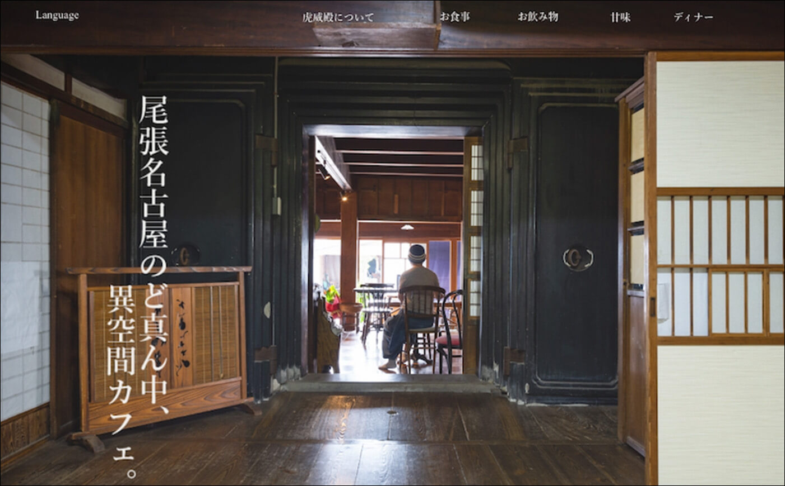

和風カフェサイトデザイン
作成期間
約17時間
使用技術
XD
Illustator
Photoshop
作品について
架空のカフェのWebデザインになります。コンセプトは和風カフェになっています。和風カフェということでメインカラーとアクセントカラーで桜をイメージしています。ファーストビューでは奥行きのある写真を使うことで、画面に立体感を作り、引き込まれるような構図にしました。サイト全体にも影をつけることで奥行きを出すことを意識しています。
デザイン

客層はカフェということで女性を主体にイメージしています。全体的に丸角を使用し柔らかい印象になるようにしました。画像の形を丸形にすることで、料理の皿や日本建築の丸窓をイメージしています。ディナーでは客層が大人の男性などの落ち着いた雰囲気の年齢層になると思ったので、メインカラーを黒、アクセントカラーを金にすることで格式高い、落ち着いた印象を与えるようにしています。飾りにはカフェの場合はイメージカラーと合うような桜の花びらを飾り、ディナーには竹をあてがいました。
仕様書
TOP